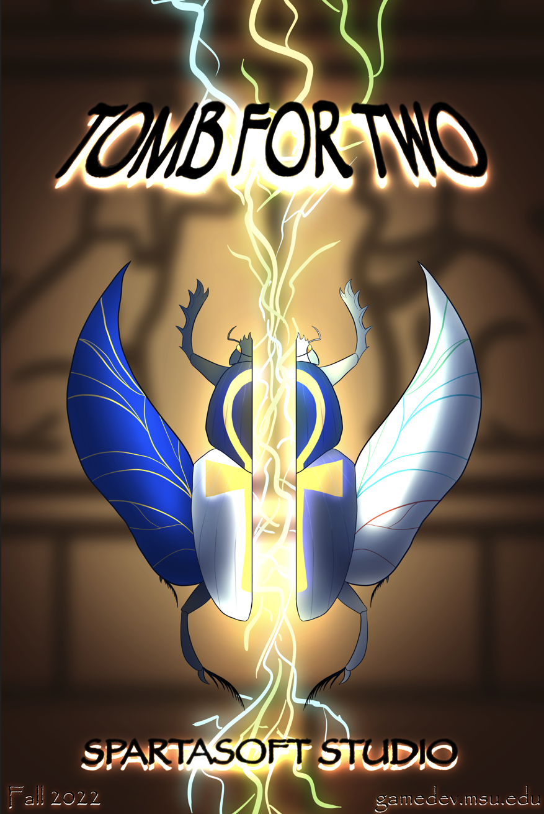

Tomb For Two is a SpartaSoft Studio project created by Michigan State Students. This 3D dungeon crawler features 2 player splitscreen. The objective of the game is to collect keys and reach the end room with your partner. During this game I worked on the art team and cooperated with all teams to devlop the UI and other art assests.
I developed a lot of the UI for the game along with some of the VFX for the game. I also created the background (Skybox) for the game. I also helped create parts for the main screen and most of the buttons for the game. This project was my first big project and I learned a lot about cooperation in a game design setting.
